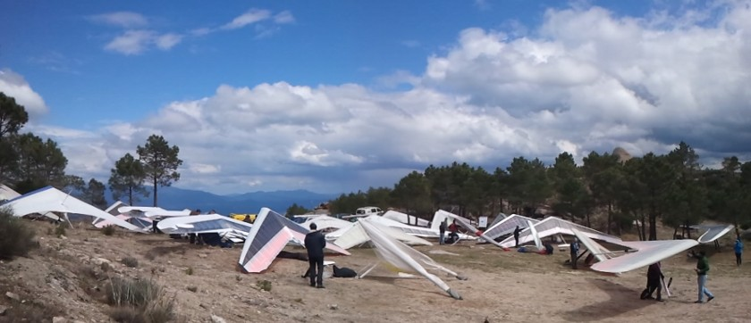

Abierta la inscripción para el II Open de Pedro Bernardo
15/02/2013
Ya está abierta la inscripción para el II Open de Pedro Bernardo. Este año se celebrará entre el miércoles 1 y el sábado 4 de mayo, con una prueba adicional el domingo 5 fuera de competición para que aquellos que vengan desde más lejos puedan volver a casa con más tiempo. La cuota de inscripción la mantenemos en 30€.

Como novedad este año tendremos un Open Internacional, al estar tramitándose su alta como competición tanto en la RFAE como en la FAI, permitiendo a aquellos pilotos que tengan las licencias correspondientes puntuar de cara a dichas organizaciones.
También estrenamos dominio para nuestra página web, opendepb.com, que nos permitirá acceder cómodamente a la página de Open así como a cualquiera de las ediciones que se hayan celebrado del mismo (añadiendo delante el número de edición, por ejemplo, para la del del año pasado sería primer.opendepb.com, para la de este segundo.opendepb.com, y así sucesivamente).
Y poco más, ahora sólo falta que la meteo trate al Open un poco mejor que el año pasado. No dejéis de visitar opendepb.com para estar al tanto de las novedades relacionadas con la zona y el evento, tened mucha paciencia con este cada vez más avanzado invierno, aprovechad bien los buenos días que os vayan saliendo, y no olvideis que a finales de abril os esperamos por el Tiétar.
¿Qué mejor forma de despedir el año y sacudirnos el monazo que con un despegue y un aterrizaje? Y si durante es descenso se nos cruza alguna termiquilla despistada pues eso que nos llevamos.
El pasado domingo 23 hizo un día “de manga corta” en el despegue, tanto por la temperatura ambiente como por la distancia entre las balizas de la prueba. Solazo con estabilidad total y la capa de inversión por debajo del despegue subiendo desde los 1000 metros más o menos.
Con ese panorama se estudió la posibilidad de poner una prueba en plan circuito urbano, que ahora están tan de moda, Iglesia-Mirador-Cuartel-Campa, por ejemplo. Pero al final decidimos hacer algo distinto: premio al que lograse engancharse más tiempo a un cero, y de premio el propio cero, que no es poco en estas fechas como se puede apreciar en la cara del vencedor de la prueba.
Nos juntamos seis pilotos (Xavier, Rafa, Julio, Armando, Lobo y Nando) que subimos en dos furgos, la de Lobo y la de Rafa, con Rosalina y Andrés en sus volantes (¡gracias!). El ganador indiscutible fue Antonio Lobo, que despeguó el primero y aterrizó el penúltimo, aguantando durante varios minutos sin perder altura, sólo él sabe cómo. :)
Aquí tenéis los enlaces a lo que nos dejó, entre otras cosas, ese agradable día en el Tiétar:
Pongo aquí también la comparativa de dichos tracks, que luce mucho (el botón de pantalla completa no funciona, para eso pinchar en el enlace anterior):
Nada más este año… ¡feliz navidad y que tengáis un 2013 cargadito de buenos vuelos!.
A no ser que nos sorprenda a todos la temporada en la que se celebró el primer Open está terminada. Aunque en líneas generales no ha sido una temporada espectacular, sin duda nos ha dejado muchos grandes días de vuelo, algunos de ellos de auténtico récord.
Como por ejemplo el jueves 19 de julio, que pudieron aprovechar Armando, Julio Sancho y Félix con vientos relativamente fuertes de suroeste y un techo en torno a los 4500 metros. Armando se fue hasta Santa María de Huerta en Zaragoza, completando un vuelo de más de 260km. Julio aterrizó pasado El Escorial, logrando alcanzar en el vértice geodésico de La Adrada los 5000m sobre el nivel del mar, alturón que no recuerdan ni los más ancianos de lugar. Y a Félix le pilló desprevenido tanta altura y sin abrigo suficiente le tocó pasar mucho frío. Tras pasar San Martín decidió volverse y aterrizar en La Adrada.
Después de ese día las condiciones se mantuvieron muy buenas y ese fin de semana disfrutamos un buen puñado de pilotos de unos de los mejores vuelos del año. Como muestra este botón, otro gran vídeo de Javi “yunquera”:
Memorable tanto por la distancia como por el número de pilotos que disfrutaron juntos de gran parte del vuelo fue el triángulo que se hicieron otro jueves, el 30 de agosto, Günter, los Julios, Armando y el Pirata. Los cinco arrancaron juntos por la este dejándose derivar hacia La Abantera desde donde pusieron rumbo hacia Calera y Chozas. Julio Sancho se quedó sin radio y aterrizó en Talavera. El resto de Calera y Chozas tiraron hacia Oropesa y desde allí hacia Candeleda. Cuando llegaron a Candeleda el nortazo había comenzado a meterse y Armando y Pirata aterrizaron en Las Ventas de San Julián. Julio y Günter hicieron techo allí y decidieron intentar llegar a La Iglesuela. Por el camino el norte se metió ya muy seriamente y aterrizaron con bastantes apuros, Günter en Buenaventura y Julio un poco más allá, completando un triángulo FAI de 115km.
Y muchos otros grandes vuelos por el valle, algunos de los cuales poco a poco se van convirtiendo en clásicos que estamos planeando poner nombre para tenerlas como rutas, y así poder poner las pruebas más cómodamente cuando las improvisamos en el despegue. Este es un buen puñado de ejemplos para suroestes (todos con Start en el campo de fútbol):
Igle: ya sabéis, el segundo aterrizaje oficial
Igle+: La Iglesuela - Piélago - La Iglesuela
Casavigle: Casavieja - La Iglesuela
Casavigle+: Casavieja - Piélago - La Iglesuela
Triangulito: Casavieja - La Iglesuela - Pedro Bernardo
Triangulito+: Casavieja - Piélago - Pedro Bernardo
Boomerang: Vértice - La Iglesuela
Boomerang+: Vértice - Piélago - La Iglesuela
Vertivuelta: Vértice - Pedro Bernardo
Vertivuelta+: Vértice - La Abantera - Pedro Bernardo
Higuesuela: Higuera - La Iglesuela
Higuesuela+: Higuera - Piélago - La Iglesuela
Vertiguera: Vértice - Higuera - La Iglesuela
Vertiguera+: Vértice - Higuera - Piélago - La Iglesuela
Triangulete: Vértice - Piélago - Pedro Bernardo
Triangulete+: Vértice - Piélago - Pedro Bernardo - La Iglesuela
Cumbres: El Cabezo - Vértice - Piélago - La Abantera - Pedro Bernardo
Cumbres+: El Cabezo - Vértice - Piélago - La Abantera - La Iglesuela
Cazastañas: Vértice - Cazalegas - Ramacastañas - La Iglesuela
Sevigredos: Vértice - Sevilleja de la Jara - Candeleda - La Iglesuela (también conocido como “el triángulaco de Guti”)
Pero por ahora habrá que esperar para poder disfrutar de nuevo alguno de esos vuelos por el Tiétar. A ver que nos depara el 2013 en el que si nada lo impide celebraremos el II Open de Ala Delta de Pedro Bernardo.